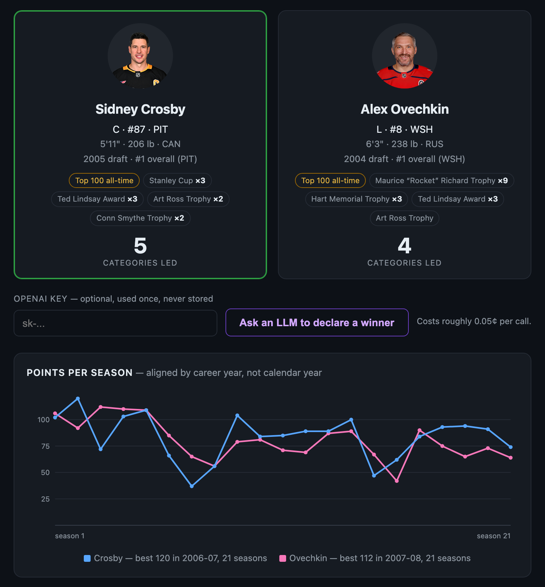
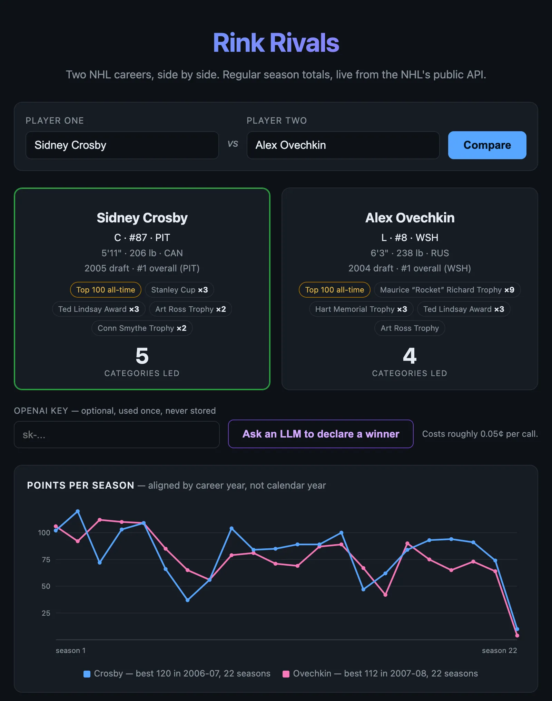
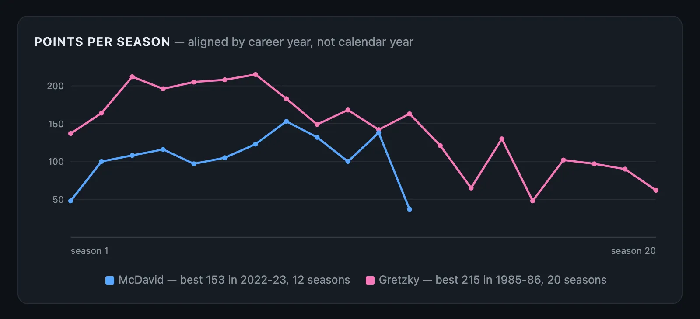
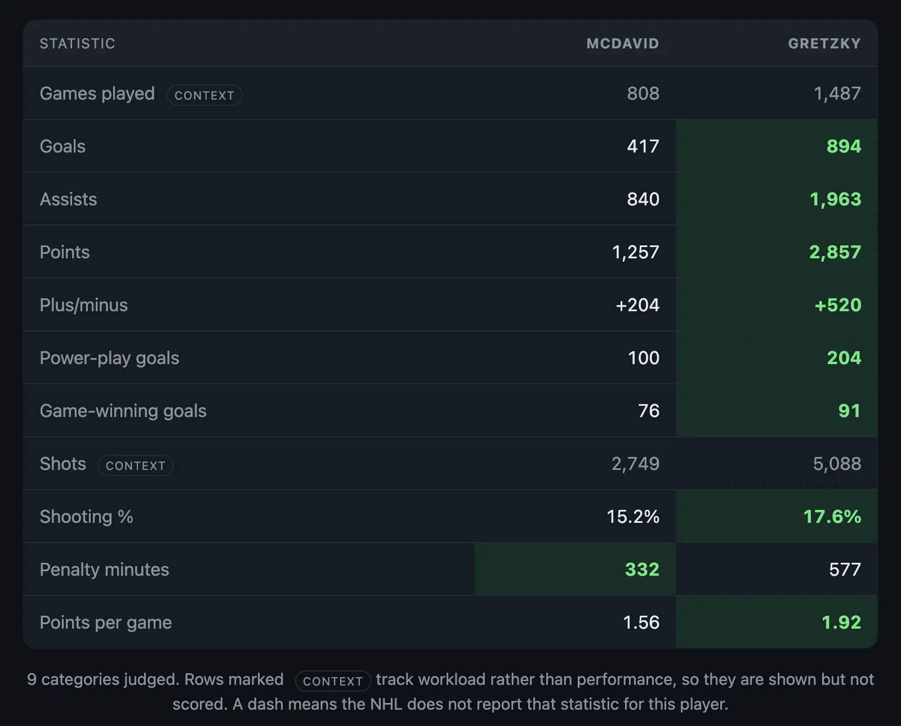
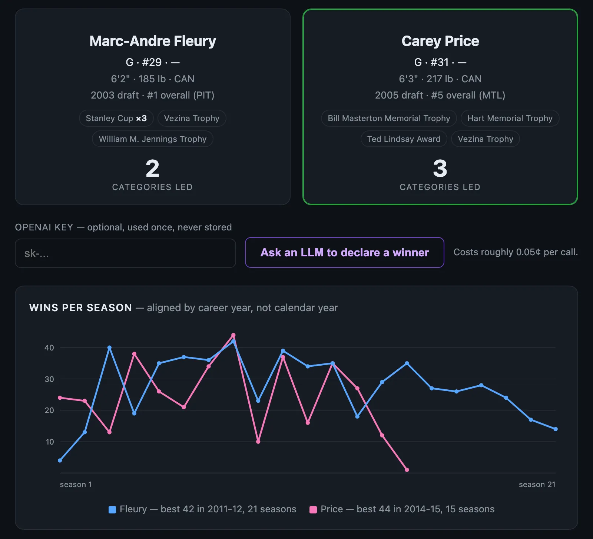

Web app · September 2026
Rink Rivals


Python, Flask, Claude Code, the NHL API, OpenAI
Type in two NHL players and see their careers side by side: every regular-season statistic with the leader highlighted, each player's draft position and trophies, and a season-by-season chart of their production. If you want it settled, a language model reads the whole comparison and picks a winner. It has to commit, explain the pick, and give the strongest argument against it. I built it for Effective Coding with AI, a Carnegie Mellon course, as a study in what a small app owes the person using it.
This is the small, public version. I have also built a much larger hockey platform that is now being demonstrated to NCAA Division I programs for their coaches, managers, scouts, and players. Its code and login are private, so they are not linked here. It runs several coordinating agents and a data-analysis agent over a hockey database of more than 6 GB. I am happy to demo it in person for anyone interested in hockey data work at that scale.
Source, tests, and prompt log on GitHub How the two APIs are called
What it is
Rink Rivals compares two NHL careers side by side. You type two names and get both players' regular-season totals, with the leader in each category highlighted, a card for each player with draft position and trophies, and a season-by-season chart of their production.

The data comes from two public NHL endpoints that need no key: one searches for a player by name, the other returns everything about one player. A comparison is four requests. The chart, trophies and draft details all come out of data the app already fetched, so the richest part of the page costs nothing extra.
If you want it settled, a button asks a language model to declare a winner. It has to commit to a pick, explain it, and give the strongest argument for the other player. It sees only the rows on the page, so you can check every claim against the table. I treat the output as an argument built from the data, not as analysis.
A tour
The chart lines careers up by season number, not calendar year. On a calendar, Gretzky and McDavid never overlap. Lined up as season 1, season 2, season 3, the chart asks a better question: how did each player develop? It is plain SVG sized in Python, with no charting library and no JavaScript.
Some rows in the table are marked context. Games played and shots measure how much someone played, not how well. They help you read the rate stats, but they never set a leader or count toward the tally.




Goalies get their own statistics and their own chart, wins per season. Shots against is context too: a goalie faces more shots mostly by playing longer, so crowning a winner there would reward longevity while looking like a judgment about skill.

Every failure ends in a sentence, not a stack trace. Skaters and goalies share almost no statistics, so the app declines to compare them.


How I built it
I built this for HW3 in Effective Coding with AI (CMU 15-113), an assignment about exploring an API. It is Python and Flask. I used Claude Opus 5 in Claude Code. Claude wrote most of the implementation; I set the direction, made the design calls, and reviewed every file.
Four questions did most of the work, all asked before writing code:
- "Which NHL endpoints need a key, and do they send CORS headers?" The player endpoint sends no CORS headers at all, so a browser-only app would fail on exactly the half that matters. The fetching happens on the server.
- "Show me the shape of `careerTotals` for a skater and for a goalie." Asking first is why the skater and goalie split is a design decision, not a bug found later.
- "Test it, including the error paths." This caught the worst bug.
- "What else is in this payload that we are not using?" Most of it. The chart and the trophies came from that answer.
The bug: my first version took the top search result, and the NHL's search does not rank by relevance. "Marc-Andre Fleury" returns Marc-Andre Dorion first. "Carey Price" returns Carey Terrance. Both are real players, so nothing raised an error. The page just quietly showed the wrong career. The fix scores the candidates: exact full name first, then every typed word in the name, then a substring, with ties going to the active player. A regression test checks both that the endpoint still misbehaves and that the app corrects it. There are 28 tests, and none of them call OpenAI.
The scoring model is mine: which statistics count, and the rule that workload is never scored as quality. So is keeping the OpenAI key on the server instead of chasing a GitHub Pages deploy. Pages has no server to hold a secret, and GitHub Secrets are build-time variables, so the key would end up in the published JavaScript. Here the key comes from an environment variable or is pasted in for one request, and it is never saved, logged or written back into the page. A verdict costs roughly 0.05 cents.
What I'd do next
Name matching is still a guess. "Sutter" is a family with six NHL brothers, and the app will confidently pick one. The better design shows the candidates and lets you choose.